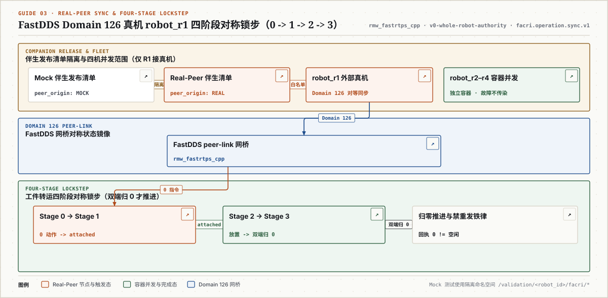

真机同步联调（Real-Peer Sync）允许在 Smart Factory
四机产线仿真中，仅将 1 号机 robot_r1
切换对接至局域网内的外部实物真机，其余三台机器人继续在容器内并发独立运行，用于在完整多机生产上下文中核验物理真机执行与上层任务编排的一致性。

同步范围与四阶段对称锁步
依据 REAL_PEER_SYNC_README.md 与
configs/skills/workpiece-processing/contract.yaml
契约规定，联调通信边界锁定为以下两项原则：
- 单机对接、余机隔离：仅 1 号机启用外部真机同步，2 号至 4 号机器人保持容器内独立执行；即使某台机器人在操作过程中出现失稳或超时，单机异常也不会扩散引发全队停机。
- 四阶段对称锁步（0 -> 1 -> 2 -> 3）：宿主机自动拉起对等网桥，默认通过 FastDDS Domain 126 与外部真机交互。每个工件转运周期严格经过四段确认推进：阶段 0 就绪等待抓取 -> 阶段 1 抓取完成等待持物移位 -> 阶段 2 到位等待放置 -> 阶段 3 放置完成等待空手返回，双方完成且归零后才允许推进下一步。
联调前准备与启停命令
启动前须核验三项条件：主机 18640 端口空闲无其余仿真会话；宿主机与对端真机控制主机网络路由连通；工作区已绑定真机伴生发布清单。随后在仓库根目录执行：
# 启动真机联调模式（宿主机 Domain 126 直连外部实物真机）
./facrictl start --real --wait
# 启动 Mock 仿真模式（仅连接容器内受控 Mock，默认行为）
./facrictl start --mock --wait
# 状态查询、安全停车与完整关闭释放锁
./facrictl status
./facrictl stop
./facrictl close --wait就绪后打开 http://127.0.0.1:18640/#global 或执行
./facrictl ui，即可像日常仿真模式一样在交互栏或任务中心派发工件加工任务。
制备不可变伴生发布清单
当需要更换对端真机 IP 地址、调整 Domain ID
或切换基线发布版本时，严禁直接手改原有只读发布 JSON，应使用
deployment/prepare_real_peer_release.py 生成不可变的 Mock
与 Real-Peer 双伴生清单：
./deployment/prepare_real_peer_release.py \
--base-release <BASE_RELEASE_DIR>/role-release.json \
--output-dir <OUTPUT_RELEASE_DIR> \
--subnet 172.29.141.0/24 \
--peer-address <REAL_PEER_IP> \
--domain-id 126 \
--link-root "$PWD"脚本读取只读基线并冻结上游环境引用后，分别生成彼此隔离的两套清单并原子更新工作区发布软链接，确保 Mock 模式绝不意外暴露外部真机地址。
展开 DDS 话题映射、清单校验规则与故障排查矩阵
1. 协议版本、DDS 话题与伴生清单校验规则
- 协议参数与话题集：网桥采用
rmw_fastrtps_cpp传输层，协议版本为 v0-whole-robot-authority（配置模板facri.operation.sync.v1，同步范围受产线配置中operation_sync_robot_ids控制）；契约将抓取动作映射至阶段 0，将放置动作映射至阶段 2。指令与回执话题为/facri/auto_cmd与/facri/auto_cmd_rep，上肢状态与仿真观察反馈话题为/facri/upper_body/state与/facri/sim_observer/state（携带grasp.attached / auto.auto_cmd / grasp.placed / auto.reason / reset_count / session / auto.stage七项观测字段）。 - 不可变清单隔离断言：Mock 清单固定写入对等来源 MOCK
与
/validation/<robot_id>/facri/*隔离话题，脚本强制校验MOCK_RELEASE_MUST_NOT_EXPOSE_EXTERNAL_PEERS；Real-Peer 清单写入对等来源 REAL、对端地址、域编号与绝对化记忆目录并计算 SHA-256 摘要，写入role-release-real-peer.json供deployment/system_entry.py自动解析。
2. 常见故障排查矩阵
| 错误特征与报错码 | 根因定位 | 标准处置措施 |
|---|---|---|
FACTORY_REAL_PEER_RELEASE_MISSING |
工作区尚未制备并链接真机伴生发布清单 | 重新运行 deployment/prepare_real_peer_release.py 并指定
--link-root |
FACTORY_REAL_PEER_ADDRESS_REQUIRED |
真机清单条目中对端地址字段为空 | 检查生成参数中的对端 IP 并重生成伴生清单 |
FACTORY_PEER_MODE_MISMATCH |
绑定清单的对等来源与启动标志不匹配 | 核对启动模式标志与当前生效清单的来源取值 |
FACTORY_ALREADY_RUNNING 或 18640 占用 |
前序仿真会话容器或共享内存物理锁尚未释放 | 执行 ./facrictl close --wait 等待清理完成后再重试 |
| 网桥连而不通或阶段停滞 | 网桥进程与真机 Domain ID、子网掩码或防火墙不一致 | 检查会话运行目录下的 auto-task-link-status.json
与网桥容器日志 |